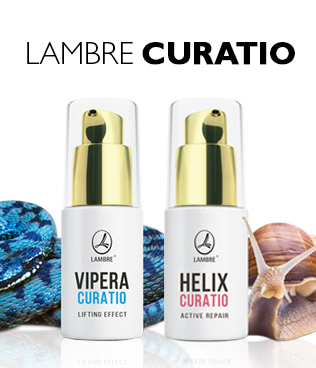

АКТИВНО ВОССТАНАВЛИВАЮЩАЯ СЫВОРОТКА СО СЛИЗЬЮ УЛИТОК
Сыворотка LAMBRE HELIX CURATIO предназначена для любого типа кожи: с признаками старения, для кожи, требующей питания и восстановления, сухой, обезвоженной, уставшей и с пигментными пятнами. Сыворотка не вызывает раздражения, подходит также для чувствительных типов кожи.
ИНТЕНСИВНАЯ ЛИФТИНГ-СЫВОРОТКА С СИНТЕТИЧЕСКИМ ЯДОМ ГАДЮКИ SYN- AKE® Революционная сыворотка SYN-AKE – это синтетический нейропептид, свойства и действие которого аналогичны действию и свойствам пептида Ваглерин-1, который находится в яде змеи. Его действие заключается в расслаблении и снятии нервно-мышечных спазмов, благодаря чему он эффективно разглаживает существующие морщины и предотвращает появление новых.